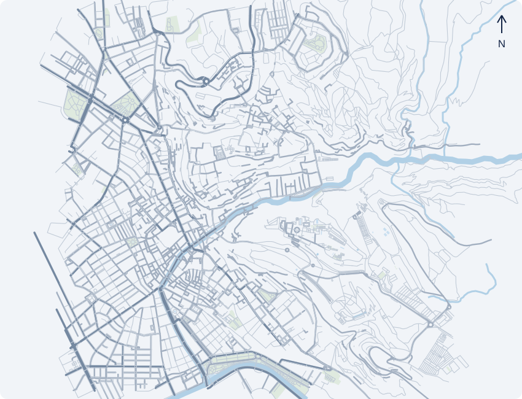
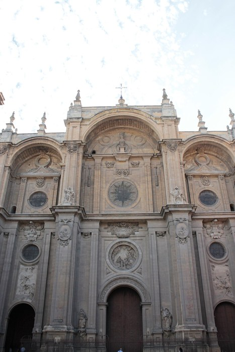
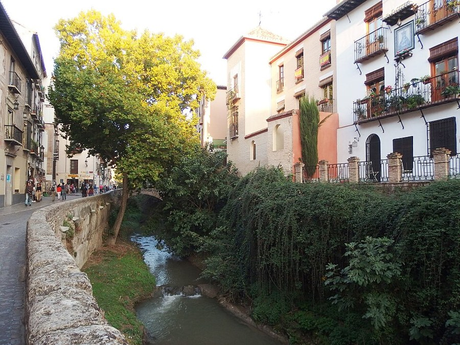
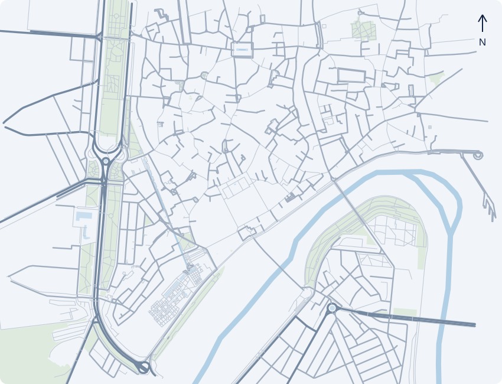
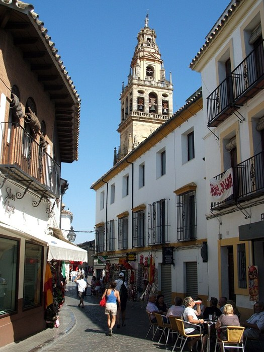
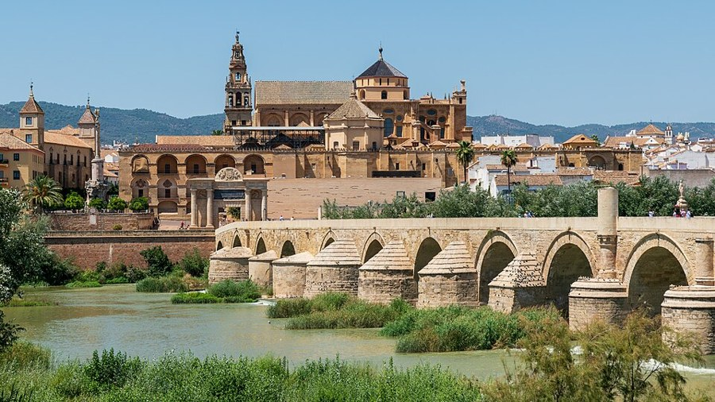
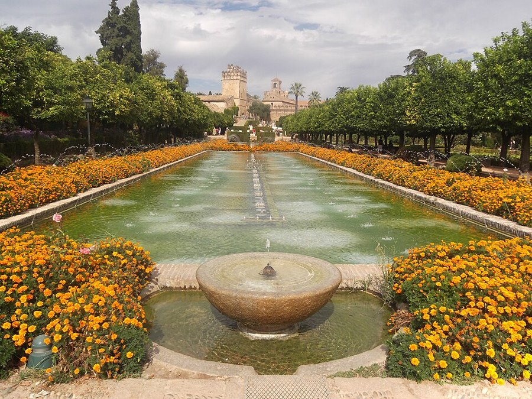
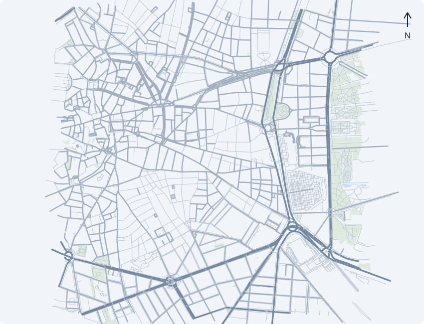
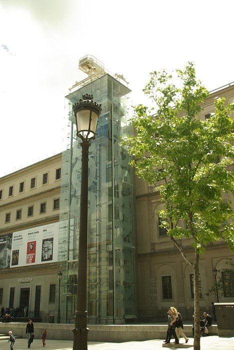

01
01Alhambra & Generalife
Palaces, gardens and water


GLAS3112 FIELD TRIP · SUBCLASS 2A
Language, heritage
and cultural mediation
26 May–9 June 2027
THE ANDALUSI LEGACY
Architecture, landscape
and cultural memory
Explore the Alhambra’s architecture, courtyards and use of water.
Observe how everyday life and tourism share a historic neighbourhood.
How does a place tell its history?

PLACES TO EXPLORE · PROPOSED
Architecture, water and the life of a historic city

01Palaces, gardens and water
02A neighbourhood and its views

03The city after 1492

04River, streets and landscape

DIVERSITY, HERITAGE AND MEMORY
Architecture carries traces of different communities and periods.
Whose stories
do visitors hear?
PLACES TO EXPLORE · PROPOSED
Read the city through its buildings, streets and river

01Layers of history and belief

02Streets and cultural memory

03The city and the Guadalquivir

04Power, architecture and gardens
ART, IDENTITY AND URBAN LIFE
The city as a
fieldwork classroom
Connect museum collections with questions of identity and historical memory.
Compare neighbourhoods, markets and everyday encounters with Hong Kong.
What can ordinary places reveal?

PLACES TO EXPLORE · PROPOSED
Art, neighbourhoods and everyday life · plus two day trips

 01
01Art and representation

02Modern art and memory
 03
03Literature and urban life
04A shared public space
 05
05Street market · proposed
DAY EXCURSIONS FROM MADRID

Coexistence, conflict
and the interpretation of heritage

Cervantes, university life
and cultural exchange
LEARNING IN THE FIELD
Look carefully at spaces and everyday encounters.
Collect notes, photographs and other evidence.
Connect Spain with Hong Kong and your own experience.
Explain your findings through an analytical, multimodal project.
TRAVELLING TOGETHER
Detailed arrangements and preparation guidance will appear on the student website.
GLAS3112 SPAIN 2027 · SUBCLASS 2A
Martín Juaristi & Pablo Torrado
Slide 1 of 15: Spain 2027